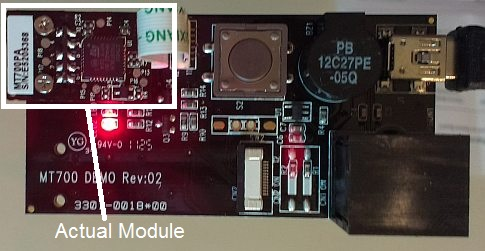
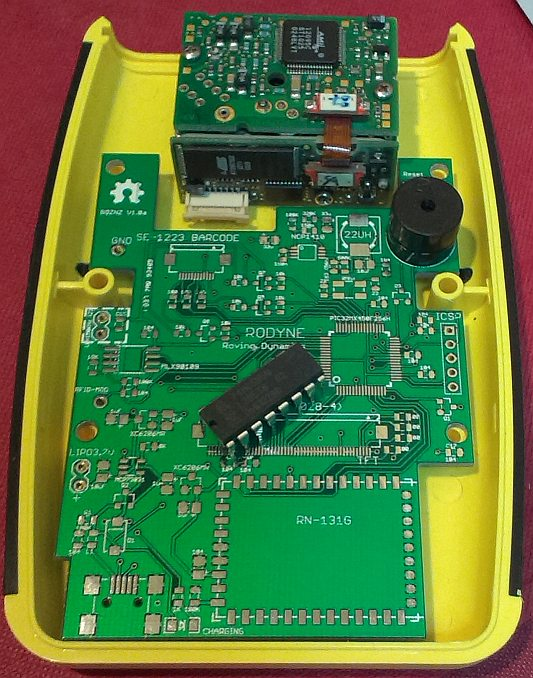

There are two types of barcode scanner engine, the laser one which oscillates a mirror to produce a line which with good timing and a photo-sensor can be converted into 1’s and 0’s. The second type is a CMOS barcode engine which is basically taking a picture of the barcode using a CMOS camera and doing some image processing to get the 1’s and 0’s out. The laser type has a much longer range than the CMOS and is generally bigger and heavier, the CMOS is cheaper and has no moving parts so is a bit more robust and less power hungry.
Choosing a barcode engine for the terminal is a lot more difficult than I first imagined. I started out with a fairly minimal set of specifications which were:
- It must communicate by UART (which all do) or SPI (not many do)
- It must be small, my reference case, the Hammond 1553B has a narrow opening at the end so it must be under 20mm height (most are)
- It should preferably use laser technology for the greater range
- It should be 3.3V (most are not!), and
- It should be under US$30 (none are!).
So much for the goals!
The biggest problem was the price, I sort of assumed these things were commodity items, but it was proving impossible despite my wildest claims to the suppliers (yes fifty now and 500 probably next year!) to get a laser barcode engine under $50, most wont give you the time of day unless you are buying 200+. The bigger brands Symbol/Motorola were generally up at about US$85 for 100+ qty, the cheaper Chinese equivalents were around $70 for the same qty. $50 could be achieved when ordering minimum quantities of 500 but this was never going to be practical.
There are about half a dozen manufacturers of OEM barcode engines, after contacting some of them I realised some were just re-branding the same scanner engine, many did not respond (But I did make contact in English which is generally not the first language of these guys), and some came back with insufficient information or sky high costs.
The most helpful response was from a company in Taiwan called Marson who supplied the MT700 CMOS 3.3V engine to me, and which is absolutely tiny, its claimed to be the smallest in the world. The photo below shows it attached to the supplied demo board.

Due to a stroke of luck, which almost always never happens! I eventually managed to secure 40 x Brand-New Symbol SE1223 barcode engines from an eBay supplier in the states, these worked out at US$20 each. So the game is back on!
The units have a few draw-backs, the main one being they are basically obsolete and you may not be able to secure the same quantities in the future, the other drawback is they work on 5V so a boost power supply and level conversions to and from 3.3V will be required. The big advantage is the range, being laser they are good up to 500mm for a typical EAN 13 product barcode and can recognise larger barcode fonts over a meter. Four of the units are the Long Range version which can do 2-3 Meters. The units communicate at a fixed 9600 baud TTL to a UART and require control signals to activate,monitor and put to sleep. They take up quite of room in the reference case and account for about 1/4 of the total weight of the terminal and a lot of the real-estate (see picture).
